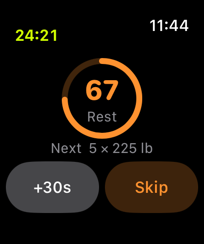
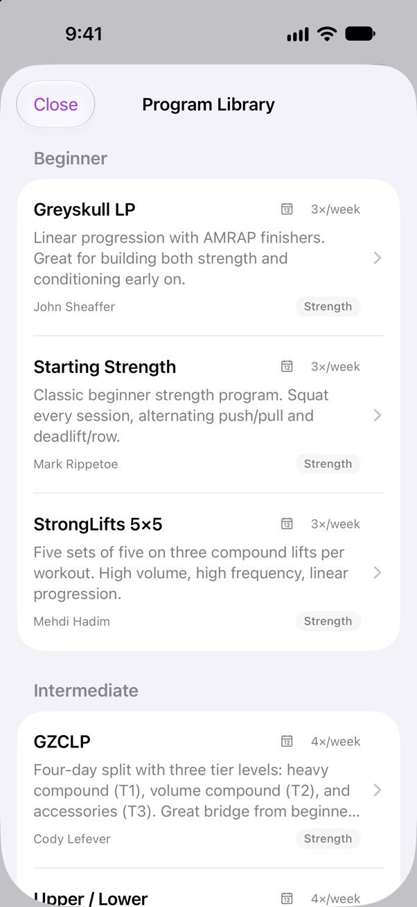
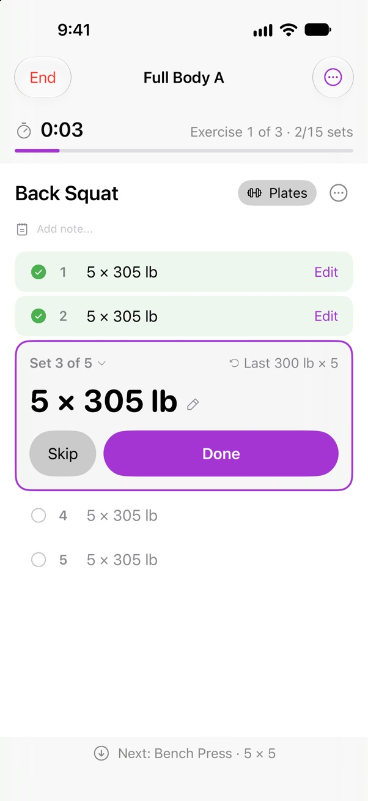
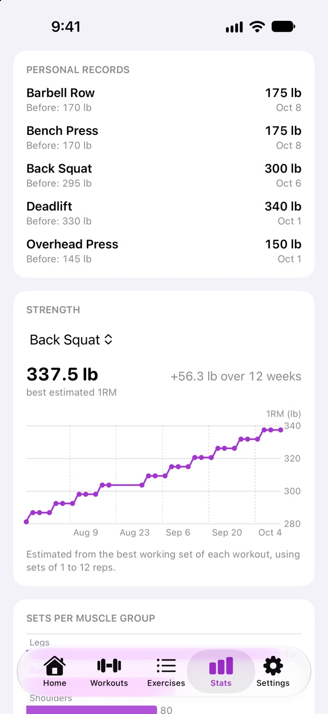

Plan your workout. Follow the flow. Track your progress.
A strength log for iPhone, iPad and Apple Watch. You pay for it once, and your training stays on your devices.
$2.99 once · iOS 17 or later
The log, not a feed.
| Sun | Back squat | 5 × 5 | 295 lb |
|---|---|---|---|
| Bench press | 5 × 5 | 170 lb | |
| Barbell row | 5 × 5 | 170 lb | |
| Tue | Back squat | 5 × 5 | 300 lb |
| Overhead press | 5 × 5 | 150 lb | |
| Deadlift | 1 × 5 | 340 lb | |
| Thu | Back squat | 5 × 5 | 300 lb |
| Bench press | 5 × 5 | 175 lb | |
| Barbell row | 5 × 5 | 175 lb |
A week of sets.
Every working set of the week, with its reps and weight. Warm-ups are logged too, and never counted.
New record
175 lb
Bench press, before 170 lb
A new record.
When a workout ends, Anvil checks every set against your history and shows which lifts beat your old best, in weight or in reps.
Strength, per lift.
An estimated one-rep max for each lift, worked out from sets of 1 to 12 reps, so you can watch your squat climb without testing it.
Plates per side.
Enter the weight on the bar and see which plates go on each side.

Rest on your wrist.
When rest is over, your Apple Watch taps your wrist, with the next set already on its screen.
From the plan to the numbers.



Start from a classic program.
StrongLifts 5×5, Starting Strength, Greyskull LP, GZCLP, Upper/Lower and Push/Pull/Legs are built in. Import one and change anything in it, or build your own from scratch.
The set you're on comes first.
Its weight and reps are the biggest thing on the screen, last session's numbers sit beside them, and rest counts down as a clock, on the Lock Screen too.
See whether you're getting stronger.
Look back over 4, 12 or 26 weeks against the weeks before, with your latest record on each lift and its estimated one-rep max. Warm-up sets never count.
Where it works.
70
Exercises built in, across every major muscle group.
Your own exercises
Add any lift the library doesn't have, and filter by muscle group.
iPhone and iPad
Each keeps its own programs and history, and nothing syncs between them.
Apple Watch
Start a workout on your iPhone and the Watch follows it, so you can log a set or skip one from your wrist. It needs the iPhone nearby, not the internet.
Apple Health
If you allow it, every finished workout is saved to Health, and the calories and heart rate your Watch recorded show up in your history.
CSV, Strong and Hevy
Export your history as a CSV file whenever you want, or bring it over from Strong or Hevy in one step.
Bring your history with you.
Export a CSV from Strong or Hevy and import it in one step, in Settings or the first time you open Anvil. Before anything is saved, a preview lists what can't come across, such as timed or distance sets. Names like "Bench Press (Barbell)" join the library's own exercise when the equipment matches, so your old bench press and your new one share one history and one record.
| From Strong or Hevy | In Anvil |
|---|---|
| Bench Press (Barbell) | Bench Press |
| Squat (Barbell) | Back Squat |
| Bent Over Row (Barbell) | Barbell Row |
| Squat (Dumbbell) | Its own exercise, under Legs |
| Plank, timed | Left out, and listed in the preview |
Who it's for.
Anvil is for you if
- You already know how to train and follow your own program
- You just want to log fast and see whether you are progressing
- You would rather buy once and own it than rent another subscription
- You want your training history private and on your own device
- You are in the Apple ecosystem (iPhone, iPad, Apple Watch)
Look elsewhere if
- You want a coach or AI to write your workouts for you
- You are here for a social feed, friends, and challenges
- You need an Android or web version
- You want to log runs, planks or carries, since sets are reps and weight
No account, and nothing to rent.
There's nothing to sign up for and nothing to sign in to. No ads, and no analytics inside the app. Your workouts are stored on your devices and never uploaded. If the app crashes, hangs or hits an error, it sends a report so the problem can be fixed. Reports carry no workout data, and you can turn them off in Settings. You pay once, with no subscription and nothing to unlock later.
No account, no ads
And no analytics inside the app.
Paid for once
No subscription and no in-app purchases, with Family Sharing.
Data Not Linked to You
The following data may be collected but it is not linked to your identity: DiagnosticsThe App Store privacy label for Anvil Workout.
I built Anvil for my own training. The apps I tried wanted a subscription, an account or a feed, and I just wanted to log my sets and see whether I was getting stronger. So Anvil keeps everything on your devices, works in the gym without a signal, and asks for one payment.
Jarl
Still being built.
| 1.10.0 | A redesigned workout screen, home screen and Stats, with the numbers first. A first start that gets you to a first workout. Supersets one set at a time, and a streak counted in weeks. |
|---|---|
| 1.9.1 | The rest timer keeps time with the phone locked, and the workout clock and rest show on the Lock Screen. |
| 1.9.0 | Crash reports can be turned off in Settings, and carry no details of your workouts. |
| Next | The full inner display on iPhone Duo, once Apple's tools for it are out of beta. |
Every version, in the changelog. Have a request? Tell me what you need.
Questions.
Does Anvil Workout need a subscription?
No. It's a one-time purchase, with no subscription and no in-app purchases. Every feature is included on iPhone, iPad and Apple Watch, and updates come with it.
Does it work without a signal?
Yes. Planning, running and reviewing a workout need no internet connection. Your programs and history are stored on your device and never uploaded. The only thing the app can send is a report if it crashes, hangs or hits an error. Reports never include your workouts, notes or Health data, and you can turn them off in Settings.
Does it work with Apple Health?
Yes, if you allow it. Each finished workout is saved to Apple Health, and Anvil reads back the calories and average heart rate Health recorded during it. Those numbers come from another source, usually an Apple Watch, so without one they are often empty.
Does the Apple Watch app work on its own?
No. Start the workout on your iPhone and the Watch follows it, so you can log and skip sets from your wrist. It needs no internet, but it does need your iPhone nearby.
Does my data sync between iPhone and iPad?
No. Each device keeps its own programs and history, and nothing syncs between them.
What happens to my data on a new iPhone?
It moves with your device backup. If you use iCloud Backup or back up to a computer, your Anvil data comes back when you restore to the new phone. Without a backup it stays on the old one.
Can I bring my history from Strong or Hevy?
Yes. Export a CSV from either app and import it in Settings, or the first time you open Anvil. The preview lists anything that can't come across, such as timed or distance sets, before anything is saved. Anvil can't import its own CSV export, so the export is a copy of your history to keep, not a backup to restore from.
Can my family use it?
Yes. Anvil Workout supports Family Sharing, so up to six family members can use it with Family Sharing turned on.
What can I log?
Programs with exercises, sets, reps, weight, rest and supersets. In the gym, each set's weight and reps, its type (working, warm-up, drop or failure) and an RPE if you want one. Afterwards, your history, personal records for weight and reps, an estimated one-rep max per lift, and volume, workouts and sets per week. Runs, planks and carries can't be logged, because a set is reps and weight.
Anvil
One payment. Every set, on your devices.
$2.99 once · iOS 17 or later